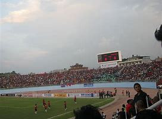

ALL NEPAL FOOTBALL ASSOCIATION

The entry and initial start-up of football came in Nepal during Rana regime in 1921. The game was introduced in Nepal by the young players who had learnt this game from other countries. This game was watched by a huge mass of audience and became very famous at that time. However, it is believed that the pioneer of this game in Nepal was Narayan Narshingh Rana of Thamel and Chandrajung Thapa of Naxal. There were some places, which were used as football ground for palace teams, such as sujan khanal, Mrigendra Shamsher Niwas babarmahal, Mahabir Niwas Tangal palace, Nar shamsher Niwas Singhdarbar, Rudra Shamsher Niwas Bhahadur Bhavan, and Thamel Narsingh camp. Whereas in the decade of 1930s, both local and palace teams commonly used the grounds of Singhdarbar, Chhauni, Gaucharan, Jawalakhel and Lainchaur for playing football. Despite of political instability at that time football was yet played enthusiastically during 1921 to 1990 by various teams without goal post, but the criterion was that the opponent team could follow the ball to the goal line.
